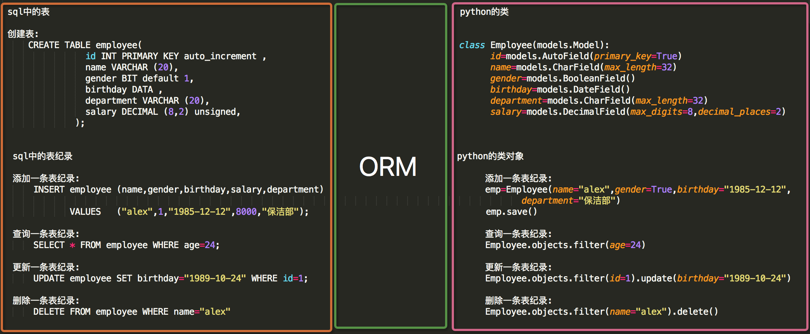

原文连接:https://www.cnblogs.com/fengqiang626/p/11598608.html
1.ORM简介
- MVC或者MVC框架中包括一个重要的部分，就是ORM，它实现了数据模型与数据库的解耦，即数据模型的设计不需要依赖于特定的数据库，通过简单的配置就可以轻松更换数据库，这极大的减轻了开发人员的工作量，不需要面对因数据库变更而导致的无效劳动
- ORM是“对象-关系-映射”的简称。（Object Relational Mapping，简称ORM）(将来会学一个sqlalchemy，是和他很像的，但是django的orm没有独立出来让别人去使用，虽然功能比sqlalchemy更强大，但是别人用不了)
- 类对象--->sql--->pymysql--->mysql服务端--->磁盘，orm其实就是将类对象的语法翻译成sql语句的一个引擎，明白orm是什么了，剩下的就是怎么使用orm，怎么来写类对象关系语句。

原生sql和python的orm代码对比
#sql中的表
#创建表:
CREATE TABLE employee(
id INT PRIMARY KEY auto_increment ,
name VARCHAR (20),
gender BIT default 1,
birthday DATA ,
department VARCHAR (20),
salary DECIMAL (8,2) unsigned,
);
#sql中的表纪录
#添加一条表纪录:
INSERT employee (name,gender,birthday,salary,department)
VALUES ("alex",1,"1985-12-12",8000,"保洁部");
#查询一条表纪录:
SELECT * FROM employee WHERE age=24;
#更新一条表纪录:
UPDATE employee SET birthday="1989-10-24" WHERE id=1;
#删除一条表纪录:
DELETE FROM employee WHERE name="alex"
#python的类
class Employee(models.Model):
id=models.AutoField(primary_key=True)
name=models.CharField(max_length=32)
gender=models.BooleanField()
birthday=models.DateField()
department=models.CharField(max_length=32)
salary=models.DecimalField(max_digits=8,decimal_places=2)
#python的类对象
#添加一条表纪录:
emp=Employee(name="alex",gender=True,birthday="1985-12-12",epartment="保洁部")
emp.save()
#查询一条表纪录:
Employee.objects.filter(age=24)
#更新一条表纪录:
Employee.objects.filter(id=1).update(birthday="1989-10-24")
#删除一条表纪录:
Employee.objects.filter(name="alex").delete()2.单表操作
2.1创建表
2.1.1创建模型
创建名为book的app，在book下的models.py中创建模型：
from django.db import models
# Create your models here.
class Book(models.Model):
id=models.AutoField(primary_key=True) #如果表里面没有写主键，表里面会自动生成一个自增主键字段，叫做id字段，orm要求每个表里面必须要写一个主键
title=models.CharField(max_length=32) #和varchar(32)是一样的，32个字符
state=models.BooleanField()
pub_date=models.DateField() #必须存这种格式"2018-12-12"
price=models.DecimalField(max_digits=8,decimal_places=2) #max_digits最大位数，decimal_places小数部分占多少位
publish=models.CharField(max_length=32) 接下来要创建对应的数据，连接上对应的数据库，然后执行创建表的命令，翻译成相应的sql，然后到数据库里面执行，从而创建对应的表。多了一步orm翻译成sql的过程，效率低了，但是没有太大的损伤，还能忍受，当你不能忍的时候，你可以自己写原生sql语句，一般的场景orm都够用了，开发起来速度更快，写法更贴近应用程序开发，还有一点就是数据库升级或者变更，那么你之前用sql语句写的数据库操作，那么就需要将sql语句全部修改，但是如果你用orm，就不需要担心这个问题，不管是你从mysql变更到oracle还是从oracle更换到mysql，你如果用的是orm来搞的，你只需要修改一下orm的引擎（配置文件里面改一些配置就搞定）就可以了，你之前写的那些orm语句还是会自动翻译成对应数据库的sql语句。
简单提一下sqlite数据库：（先忽略）
2.1.2更多字段和参数
每个字段有一些特有的参数，例如，CharField需要max_length参数来指定VARCHAR数据库字段的大小。还有一些适用于所有字段的通用参数。 这些参数在文档中有详细定义，这里我们只简单介绍一些最常用的：
更多字段：
'''
<1> CharField
字符串字段, 用于较短的字符串.
CharField 要求必须有一个参数 maxlength, 用于从数据库层和Django校验层限制该字段所允许的最大字符数.
<2> IntegerField
#用于保存一个整数.
<3> DecimalField
一个浮点数. 必须 提供两个参数:
参数 描述
max_digits 总位数(不包括小数点和符号)
decimal_places 小数位数
举例来说, 要保存最大值为 999 (小数点后保存2位),你要这样定义字段:
models.DecimalField(..., max_digits=5, decimal_places=2)
要保存最大值一百万(小数点后保存10位)的话,你要这样定义:
models.DecimalField(..., max_digits=17, decimal_places=10) #max_digits大于等于17就能存储百万以上的数了
admin 用一个文本框(<input type="text">)表示该字段保存的数据.
<4> AutoField
一个 IntegerField, 添加记录时它会自动增长. 你通常不需要直接使用这个字段;
自定义一个主键：my_id=models.AutoField(primary_key=True)
如果你不指定主键的话,系统会自动添加一个主键字段到你的 model.
<5> BooleanField
A true/false field. admin 用 checkbox 来表示此类字段.
<6> TextField
一个容量很大的文本字段.
admin 用一个 <textarea> (文本区域)表示该字段数据.(一个多行编辑框).
<7> EmailField
一个带有检查Email合法性的 CharField,不接受 maxlength 参数.
<8> DateField
一个日期字段. 共有下列额外的可选参数:
Argument 描述
auto_now 当对象被保存时(更新或者添加都行),自动将该字段的值设置为当前时间.通常用于表示 "last-modified" 时间戳.
auto_now_add 当对象首次被创建时,自动将该字段的值设置为当前时间.通常用于表示对象创建时间.
（仅仅在admin中有意义...)
<9> DateTimeField
一个日期时间字段. 类似 DateField 支持同样的附加选项.
<10> ImageField
类似 FileField, 不过要校验上传对象是否是一个合法图片.#它有两个可选参数:height_field和width_field,
如果提供这两个参数,则图片将按提供的高度和宽度规格保存.
<11> FileField
一个文件上传字段.
要求一个必须有的参数: upload_to, 一个用于保存上载文件的本地文件系统路径. 这个路径必须包含 strftime #formatting,
该格式将被上载文件的 date/time
替换(so that uploaded files don't fill up the given directory).
admin 用一个<input type="file">部件表示该字段保存的数据(一个文件上传部件) .
注意：在一个 model 中使用 FileField 或 ImageField 需要以下步骤:
（1）在你的 settings 文件中, 定义一个完整路径给 MEDIA_ROOT 以便让 Django在此处保存上传文件.
(出于性能考虑,这些文件并不保存到数据库.) 定义MEDIA_URL 作为该目录的公共 URL. 要确保该目录对
WEB服务器用户帐号是可写的.
（2） 在你的 model 中添加 FileField 或 ImageField, 并确保定义了 upload_to 选项,以告诉 Django
使用 MEDIA_ROOT 的哪个子目录保存上传文件.你的数据库中要保存的只是文件的路径(相对于 MEDIA_ROOT).
出于习惯你一定很想使用 Django 提供的 get_<#fieldname>_url 函数.举例来说,如果你的 ImageField
叫作 mug_shot, 你就可以在模板中以 {{ object.#get_mug_shot_url }} 这样的方式得到图像的绝对路径.
<12> URLField
用于保存 URL. 若 verify_exists 参数为 True (默认), 给定的 URL 会预先检查是否存在( 即URL是否被有效装入且
没有返回404响应).
admin 用一个 <input type="text"> 文本框表示该字段保存的数据(一个单行编辑框)
<13> NullBooleanField
类似 BooleanField, 不过允许 NULL 作为其中一个选项. 推荐使用这个字段而不要用 BooleanField 加 null=True 选项
admin 用一个选择框 <select> (三个可选择的值: "Unknown", "Yes" 和 "No" ) 来表示这种字段数据.
<14> SlugField
"Slug" 是一个报纸术语. slug 是某个东西的小小标记(短签), 只包含字母,数字,下划线和连字符.#它们通常用于URLs
若你使用 Django 开发版本,你可以指定 maxlength. 若 maxlength 未指定, Django 会使用默认长度: 50. #在
以前的 Django 版本,没有任何办法改变50 这个长度.
这暗示了 db_index=True.
它接受一个额外的参数: prepopulate_from, which is a list of fields from which to auto-#populate
the slug, via JavaScript,in the object's admin form: models.SlugField
(prepopulate_from=("pre_name", "name"))prepopulate_from 不接受 DateTimeFields.
<13> XMLField
一个校验值是否为合法XML的 TextField,必须提供参数: schema_path, 它是一个用来校验文本的 RelaxNG schema #的文件系统路径.
<14> FilePathField
可选项目为某个特定目录下的文件名. 支持三个特殊的参数, 其中第一个是必须提供的.
参数 描述
path 必需参数. 一个目录的绝对文件系统路径. FilePathField 据此得到可选项目.
Example: "/home/images".
match 可选参数. 一个正则表达式, 作为一个字符串, FilePathField 将使用它过滤文件名.
注意这个正则表达式只会应用到 base filename 而不是
路径全名. Example: "foo.*\.txt^", 将匹配文件 foo23.txt 却不匹配 bar.txt 或 foo23.gif.
recursive可选参数.要么 True 要么 False. 默认值是 False. 是否包括 path 下面的全部子目录.
这三个参数可以同时使用.
match 仅应用于 base filename, 而不是路径全名. 那么,这个例子:
FilePathField(path="/home/images", match="foo.*", recursive=True)
...会匹配 /home/images/foo.gif 而不匹配 /home/images/foo/bar.gif
<15> IPAddressField
一个字符串形式的 IP 地址, (i.e. "24.124.1.30").
<16> CommaSeparatedIntegerField
用于存放逗号分隔的整数值. 类似 CharField, 必须要有maxlength参数.
''' 更多参数：
(1)null
如果为True，Django 将用NULL 来在数据库中存储空值。 默认值是 False.
(1)blank
如果为True，该字段允许不填。默认为False。
要注意，这与 null 不同。null纯粹是数据库范畴的，而 blank 是数据验证范畴的。
如果一个字段的blank=True，表单的验证将允许该字段是空值。如果字段的blank=False，该字段就是必填的。
(2)default
字段的默认值。可以是一个值或者可调用对象。如果可调用 ，每有新对象被创建它都会被调用，如果你的字段没有设置可以为空，那么将来如果我们后添加一个字段，这个字段就要给一个default值
(3)primary_key
如果为True，那么这个字段就是模型的主键。如果你没有指定任何一个字段的primary_key=True，
Django 就会自动添加一个IntegerField字段做为主键，所以除非你想覆盖默认的主键行为，
否则没必要设置任何一个字段的primary_key=True。
(4)unique
如果该值设置为 True, 这个数据字段的值在整张表中必须是唯一的
(5)choices
由二元组组成的一个可迭代对象（例如，列表或元组），用来给字段提供选择项。 如果设置了choices ，默认的表单将是一个选择框而不是标准的文本框，<br>而且这个选择框的选项就是choices 中的选项。
(6)db_index
如果db_index=True 则代表着为此字段设置数据库索引。
DatetimeField、DateField、TimeField这个三个时间字段，都可以设置如下属性。
(7)auto_now_add
配置auto_now_add=True，创建数据记录的时候会把当前时间添加到数据库。
(8)auto_now
配置上auto_now=True，每次更新数据记录的时候会更新该字段，标识这条记录最后一次的修改时间。关于auto_now，需要知道的事情
当需要更新时间的时候，我们尽量通过datetime模块来创建当前时间，并保存或者更新到数据库里面，看下面的分析：
假如我们的表结构是这样的
class User(models.Model):
username = models.CharField(max_length=255, unique=True, verbose_name='用户名')
is_active = models.BooleanField(default=False, verbose_name='激活状态')
那么我们修改用户名和状态可以使用如下两种方法：
方法一：
User.objects.filter(id=1).update(username='nick',is_active=True)
方法二：
_t = User.objects.get(id=1)
_t.username='nick'
_t.is_active=True
_t.save()
方法一适合更新一批数据，类似于mysql语句update user set username='nick' where id = 1
方法二适合更新一条数据，也只能更新一条数据，当只有一条数据更新时推荐使用此方法，另外此方法还有一个好处，我们接着往下看
具有auto_now属性字段的更新
我们通常会给表添加三个默认字段
- 自增ID，这个django已经默认加了，就像上边的建表语句，虽然只写了username和is_active两个字段，但表建好后也会有一个默认的自增id字段
- 创建时间，用来标识这条记录的创建时间，具有auto_now_add属性，创建记录时会自动填充当前时间到此字段
- 修改时间，用来标识这条记录最后一次的修改时间，具有auto_now属性，当记录发生变化时填充当前时间到此字段
就像下边这样的表结构
class User(models.Model):
create_time = models.DateTimeField(auto_now_add=True, verbose_name='创建时间')
update_time = models.DateTimeField(auto_now=True, verbose_name='更新时间')
username = models.CharField(max_length=255, unique=True, verbose_name='用户名')
is_active = models.BooleanField(default=False, verbose_name='激活状态')
当表有字段具有auto_now属性且你希望他能自动更新时，必须使用上边方法二的更新，不然auto_now字段不会更新，也就是：
_t = User.objects.get(id=1)
_t.username='nick'
_t.is_active=True
_t.save()
json/dict类型数据更新字段
目前主流的web开放方式都讲究前后端分离，分离之后前后端交互的数据格式大都用通用的jason型，那么如何用最少的代码方便的更新json格式数据到数据库呢？同样可以使用如下两种方法：
方法一：
data = {'username':'nick','is_active':'0'}
User.objects.filter(id=1).update(**data)
同样这种方法不能自动更新具有auto_now属性字段的值
通常我们再变量前加一个星号(*)表示这个变量是元组/列表，加两个星号表示这个参数是字典
方法二：
data = {'username':'nick','is_active':'0'}
_t = User.objects.get(id=1)
_t.__dict__.update(**data)
_t.save()
方法二和方法一同样无法自动更新auto_now字段的值
注意这里使用到了一个__dict__方法
方法三：
_t = User.objects.get(id=1)
_t.role=Role.objects.get(id=3)
_t.save()
#想让auto_now更新数据时自动更新时间，必须使用save方法来更新数据，所以很不方便，所以这个创建时自动添加时间或者更新时间的auto_now方法我们最好就别用了，比较恶心，并且支持我们自己来给这个字段更新时间：
models.py:
class Book(models.Model):
name = models.CharField(max_length=32)
date1 = models.DateTimeField(auto_now=True,null=True)
date2 = models.DateTimeField(auto_now_add=True,null=True)
views.py:
import datetime
models.Book.objects.filter(id=1).update(
name='chao',
date1=datetime.datetime.now(),
date2=datetime.datetime.now(),
)2.1.3settings配置
若想将模型转为mysql数据库中的表，需要在settings中配置：
DATABASES = {
'default': {
'ENGINE': 'django.db.backends.mysql',
'NAME':'bms', # 要连接的数据库，连接前需要创建好
'USER':'root', # 连接数据库的用户名
'PASSWORD':'', # 连接数据库的密码
'HOST':'127.0.0.1', # 连接主机，默认本级
'PORT'：3306 # 端口 默认3306
}
}DATABASES = {
'default': {
'ENGINE': 'django.db.backends.mysql',
'NAME':'bms', # 要连接的数据库，连接前需要创建好
'USER':'root', # 连接数据库的用户名
'PASSWORD':'', # 连接数据库的密码
'HOST':'127.0.0.1', # 连接主机，默认本级
'PORT'：3306 # 端口 默认3306
}，
'app01': { #可以为每个app都配置自己的数据，并且数据库还可以指定别的，也就是不一定就是mysql，也可以指定sqlite等其他的数据库
'ENGINE': 'django.db.backends.mysql',
'NAME':'bms', # 要连接的数据库，连接前需要创建好
'USER':'root', # 连接数据库的用户名
'PASSWORD':'', # 连接数据库的密码
'HOST':'127.0.0.1', # 连接主机，默认本级
'PORT'：3306 # 端口 默认3306
}
}注意1：NAME即数据库的名字，在mysql连接前该数据库必须已经创建，而上面的sqlite数据库下的db.sqlite3则是项目自动创建 USER和PASSWORD分别是数据库的用户名和密码。设置完后，再启动我们的Django项目前，我们需要激活我们的mysql。然后，启动项目，会报错：no module named MySQLdb 。这是因为django默认你导入的驱动是MySQLdb，可是MySQLdb 对于py3有很大问题，所以我们需要的驱动是PyMySQL 所以，我们只需要找到项目名文件下的__init__,在里面写入：
import pymysql
pymysql.install_as_MySQLdb()最后通过两条数据库迁移命令即可在指定的数据库中创建表 ：
python manage.py makemigrations #生成记录，每次修改了models里面的内容或者添加了新的app，新的app里面写了models里面的内容，都要执行这两条
python manage.py migrate #执行上面这个语句的记录来创建表，生成的表名字前面会自带应用的名字，例如：你的book表在mysql里面叫做app01_book表
关于同步指令的执行简单原理：
在执行 python manager.py magrations 时django 会在相应的 app 的migration文件夹下面生成 一个python脚本文件
在执行 python manager.py migrte 时 django才会生成数据库表，那么django是如何生成数据库表的呢，
django是根据 migration下面的脚本文件来生成数据表的
每个migration文件夹下面有多个脚本，那么django是如何知道该执行那个文件的呢，django有一张django-migrations表，表中记录了已经执行的脚本，那么表中没有的就是还没执行的脚本，则 执行migrate的时候就只执行表中没有记录的那些脚本。
有时在执行 migrate 的时候如果发现没有生成相应的表，可以看看在 django-migrations表中看看 脚本是否已经执行了,
可以删除 django-migrations 表中的记录 和 数据库中相应的表,然后重新执行
通过pycharm提供的功能来执行manage.py相关的指令：
给之前的字段添加一些数据，然后再添加一个字段，然后执行上面两个指令，看看效果。
注意2:确保配置文件中的INSTALLED_APPS中写入我们创建的app名称
INSTALLED_APPS = [
'django.contrib.admin', #这是django给你提供的一些特殊功能的配置（应用，只是咱们看不到），也在应用这里给配置的，这些功能如果你注销了，那么我们执行同步数据库指令之后，就不会生成那些django自带的表了。因为执行数据库同步语句的时候，django会找这里面所有的应用，找到他们的models来创建表
'django.contrib.auth',
'django.contrib.contenttypes',
'django.contrib.sessions',
'django.contrib.messages',
'django.contrib.staticfiles',
"book" #直接写app的名字也行，写'app01.apps.App01Config'也行
]
注意3:如果报错如下：
django.core.exceptions.ImproperlyConfigured: mysqlclient 1.3.3 or newer is required; you have 0.7.11.None
MySQLclient目前只支持到python3.4，因此如果使用的更高版本的python，需要修改如下：
通过查找路径C:\Programs\Python\Python36-32\Lib\site-packages\Django-2.0-py3.6.egg\django\db\backends\mysql
这个路径里的文件把
if version < (1, 3, 3):
raise ImproperlyConfigured("mysqlclient 1.3.3 or newer is required; you have %s" % Database.__version__)
注释掉 就OK了。
注意4: 如果想打印orm转换过程中的sql，需要在settings中进行如下配置：（学了增加记录的语句在过来配置吧）
LOGGING = {
'version': 1,
'disable_existing_loggers': False,
'handlers': {
'console':{
'level':'DEBUG',
'class':'logging.StreamHandler',
},
},
'loggers': {
'django.db.backends': {
'handlers': ['console'],
'propagate': True,
'level':'DEBUG',
},
}
}
还有一种查看sql语句的方式
from app01 import models
def add_book(request):
'''
添加表记录
:param request: http请求信息
:return:
'''
book_obj = models.Book(title='python',price=123,pub_date='2012-12-12',publish='人民出版社')
book_obj.save()
from django.db import connection #通过这种方式也能查看执行的sql语句
print(connection.queries)
return HttpResponse('ok')
2.1.4自定义字段（了解）
class UnsignedIntegerField(models.IntegerField):
def db_type(self, connection):
return 'integer UNSIGNED'
自定义char类型字段：
class FixedCharField(models.Field):
"""
自定义的char类型的字段类
"""
def __init__(self, max_length, *args, **kwargs):
super().__init__(max_length=max_length, *args, **kwargs)
self.length = max_length
def db_type(self, connection):
"""
限定生成数据库表的字段类型为char，长度为length指定的值
"""
return 'char(%s)' % self.length
class Class(models.Model):
id = models.AutoField(primary_key=True)
title = models.CharField(max_length=25)
# 使用上面自定义的char类型的字段
cname = FixedCharField(max_length=25)
创建的表结构：
附ORM字段与数据库实际字段的对应关系:
'AutoField': 'integer AUTO_INCREMENT',
'BigAutoField': 'bigint AUTO_INCREMENT',
'BinaryField': 'longblob',
'BooleanField': 'bool',
'CharField': 'varchar(%(max_length)s)',
'CommaSeparatedIntegerField': 'varchar(%(max_length)s)',
'DateField': 'date',
'DateTimeField': 'datetime',
'DecimalField': 'numeric(%(max_digits)s, %(decimal_places)s)',
'DurationField': 'bigint',
'FileField': 'varchar(%(max_length)s)',
'FilePathField': 'varchar(%(max_length)s)',
'FloatField': 'double precision',
'IntegerField': 'integer',
'BigIntegerField': 'bigint',
'IPAddressField': 'char(15)',
'GenericIPAddressField': 'char(39)',
'NullBooleanField': 'bool',
'OneToOneField': 'integer',
'PositiveIntegerField': 'integer UNSIGNED',
'PositiveSmallIntegerField': 'smallint UNSIGNED',
'SlugField': 'varchar(%(max_length)s)',
'SmallIntegerField': 'smallint',
'TextField': 'longtext',
'TimeField': 'time',
'UUIDField': 'char(32)',
2.2添加表纪录
在python中orm的对应关系有三种：
类 ---------->表
类对象 ---------->行(记录)
类属性 ---------->表的字段（重点）
6.png)
首先想操作表的增删改查，你需要导入这个表
#在逻辑代码中导入你要操作的表
from app01 import models
def add_book(request):
'''
添加表记录
:param request: http请求信息
:return:
'''
models.Book(title='python',price=123,pub_date='2012-12-12',publish='人民出版社') #pub_date=datetime.datetime.now()，这个字段直接给日期时间类型的数据也是可以的
2.2.1方式1
book_obj=Book(title="python葵花宝典",state=True,price=100,publish="苹果出版社",pub_date="2012-12-12") #实例化一个对象表示一行记录，时间日期如果只写日期的话，时间默认是00.00.00，注意日期写法必须是2012-12-12这种格式
book_obj.save() #就是pymysql的那个commit提交
2.2.2方式2（用的多）
# create方法的返回值book_obj就是插入book表中的python葵花宝典这本书籍纪录对象
book_obj=Book.objects.create(title="python葵花宝典",state=True,price=100,publish="苹果出版社",pub_date="2012-12-12") #这个返回值就像是mysql里面咱们讲的那个new对象，还记得吗，他跟上面那种创建方式创建的那个对象是一样的 #这个Book.objects就像是一个Book表的管理器一样，提供了增删改查所有的方法 print(book_obj.title) #可以基于这个对象来取这个新添加的记录对象的属性值 dic1 = {'title':'linux','state'=True,'price':100,'publish'='2018-12-12'} #这样写的时候，注意如果你用post提交过来的请求，有个csrf_token的键值对要删除，并且request.POST是不能直接在request.POST里面进行修改和删除的，data = request.POST.dict()转换成普通的字典-->Book.objects.create(**data) book.objects.create(**dic1)
2.2.3方式3：批量插入
book_list = []
for i in range(10):
bk_obj = models.Book(
name='chao%s'%i,
addr='北京%s'%i
)
book_list.append(bk_obj)
models.Book.objects.bulk_create(book_list) #批量插入，速度快
update_or_create:有就更新，没有就创建 ，还有个get_or_create，有就查询出来，没有就创建
obj,created = models.UserToken.objects.update_or_create(
user=user, # 查找筛选条件
defaults={ # 添加或者更新的数据
"token":random_str,
}
)
2.3查询表纪录
还记得表类.objects像是一个管理器，提供了增删改查的方法，Book.objects.all()获取所有的书籍，查询这里大家就掌握谁调用的下面的方法
2.3.1查询API（都是重点）
<1> all(): 查询所有结果，结果是queryset类型
<2> filter(**kwargs): 它包含了与所给筛选条件相匹配的对象，结果也是queryset类型 Book.objects.filter(title='linux',price=100) #里面的多个条件用逗号分开，并且这几个条件必须都成立，是and的关系，or关系的我们后面再学，直接在这里写是搞不定or的
<3> get(**kwargs): 返回与所给筛选条件相匹配的对象，不是queryset类型，是行记录对象，返回结果有且只有一个，
如果符合筛选条件的对象超过一个或者没有都会抛出错误。捕获异常try。 Book.objects.get(id=1)
<4> exclude(**kwargs): 排除的意思，它包含了与所给筛选条件不匹配的对象，没有不等于的操作昂，用这个exclude，返回值是queryset类型 Book.objects.exclude(id=6)，返回id不等于6的所有的对象，或者在queryset基础上调用，Book.objects.all().exclude(id=6)
<5> order_by(*field): queryset类型的数据来调用，对查询结果排序,默认是按照id来升序排列的，返回值还是queryset类型
models.Book.objects.all().order_by('price','id') #直接写price，默认是按照price升序排列，按照字段降序排列，就写个负号就行了order_by('-price'),order_by('price','id')是多条件排序，按照price进行升序，price相同的数据，按照id进行升序
<6> reverse(): queryset类型的数据来调用，对查询结果反向排序，返回值还是queryset类型
<7> count(): queryset类型的数据来调用，返回数据库中匹配查询(QuerySet)的对象数量。
<8> first(): queryset类型的数据来调用，返回第一条记录 Book.objects.all()[0] = Book.objects.all().first()，得到的都是model对象，不是queryset
<9> last(): queryset类型的数据来调用，返回最后一条记录
<10> exists(): queryset类型的数据来调用，如果QuerySet包含数据，就返回True，否则返回False
空的queryset类型数据也有布尔值True和False，但是一般不用它来判断数据库里面是不是有数据，如果有大量的数据，你用它来判断，那么就需要查询出所有的数据，效率太差了，用count或者exits
例：all_books = models.Book.objects.all().exists() #翻译成的sql是SELECT (1) AS `a` FROM `app01_book` LIMIT 1，就是通过limit 1，取一条来看看是不是有数据
<11> values(*field): 用的比较多，queryset类型的数据来调用，返回一个ValueQuerySet——一个特殊的QuerySet，运行后得到的并不是一系列
model的实例化对象，而是一个可迭代的字典序列,只要是返回的queryset类型，就可以继续链式调用queryset类型的其他的查找方法，其他方法也是一样的。
<12> values_list(*field): 它与values()非常相似，它返回的是一个元组序列，values返回的是一个字典序列
<13> distinct(): values和values_list得到的queryset类型的数据来调用，从返回结果中剔除重复纪录
queryset方法大全：
##################################################################
# PUBLIC METHODS THAT ALTER ATTRIBUTES AND RETURN A NEW QUERYSET #
##################################################################
def all(self)
# 获取所有的数据对象
def filter(self, *args, **kwargs)
# 条件查询
# 条件可以是：参数，字典，Q
def exclude(self, *args, **kwargs)
# 条件查询
# 条件可以是：参数，字典，Q
def select_related(self, *fields)
性能相关：表之间进行join连表操作，一次性获取关联的数据。
总结：
1. select_related主要针一对一和多对一关系进行优化。
2. select_related使用SQL的JOIN语句进行优化，通过减少SQL查询的次数来进行优化、提高性能。
def prefetch_related(self, *lookups)
性能相关：多表连表操作时速度会慢，使用其执行多次SQL查询在Python代码中实现连表操作。
总结：
1. 对于多对多字段（ManyToManyField）和一对多字段，可以使用prefetch_related()来进行优化。
2. prefetch_related()的优化方式是分别查询每个表，然后用Python处理他们之间的关系。
def annotate(self, *args, **kwargs)
# 用于实现聚合group by查询
from django.db.models import Count, Avg, Max, Min, Sum
v = models.UserInfo.objects.values('u_id').annotate(uid=Count('u_id'))
# SELECT u_id, COUNT(ui) AS `uid` FROM UserInfo GROUP BY u_id
v = models.UserInfo.objects.values('u_id').annotate(uid=Count('u_id')).filter(uid__gt=1)
# SELECT u_id, COUNT(ui_id) AS `uid` FROM UserInfo GROUP BY u_id having count(u_id) > 1
v = models.UserInfo.objects.values('u_id').annotate(uid=Count('u_id',distinct=True)).filter(uid__gt=1)
# SELECT u_id, COUNT( DISTINCT ui_id) AS `uid` FROM UserInfo GROUP BY u_id having count(u_id) > 1
def distinct(self, *field_names)
# 用于distinct去重
models.UserInfo.objects.values('nid').distinct()
# select distinct nid from userinfo
注：只有在PostgreSQL中才能使用distinct进行去重
def order_by(self, *field_names)
# 用于排序
models.UserInfo.objects.all().order_by('-id','age')
def extra(self, select=None, where=None, params=None, tables=None, order_by=None, select_params=None)
# 构造额外的查询条件或者映射，如：子查询
Entry.objects.extra(select={'new_id': "select col from sometable where othercol > %s"}, select_params=(1,))
Entry.objects.extra(where=['headline=%s'], params=['Lennon'])
Entry.objects.extra(where=["foo='a' OR bar = 'a'", "baz = 'a'"])
Entry.objects.extra(select={'new_id': "select id from tb where id > %s"}, select_params=(1,), order_by=['-nid'])
def reverse(self):
# 倒序
models.UserInfo.objects.all().order_by('-nid').reverse()
# 注：如果存在order_by，reverse则是倒序，如果多个排序则一一倒序
def defer(self, *fields):
models.UserInfo.objects.defer('username','id')
或
models.UserInfo.objects.filter(...).defer('username','id')
#映射中排除某列数据
def only(self, *fields):
#仅取某个表中的数据
models.UserInfo.objects.only('username','id')
或
models.UserInfo.objects.filter(...).only('username','id')
def using(self, alias):
指定使用的数据库，参数为别名（setting中的设置）
##################################################
# PUBLIC METHODS THAT RETURN A QUERYSET SUBCLASS #
##################################################
def raw(self, raw_query, params=None, translations=None, using=None):
# 执行原生SQL
models.UserInfo.objects.raw('select * from userinfo')
# 如果SQL是其他表时，必须将名字设置为当前UserInfo对象的主键列名
models.UserInfo.objects.raw('select id as nid from 其他表')
# 为原生SQL设置参数
models.UserInfo.objects.raw('select id as nid from userinfo where nid>%s', params=[12,])
# 将获取的到列名转换为指定列名
name_map = {'first': 'first_name', 'last': 'last_name', 'bd': 'birth_date', 'pk': 'id'}
Person.objects.raw('SELECT * FROM some_other_table', translations=name_map)
# 指定数据库
models.UserInfo.objects.raw('select * from userinfo', using="default")
################### 原生SQL ###################
from django.db import connection, connections
cursor = connection.cursor() # cursor = connections['default'].cursor()
cursor.execute("""SELECT * from auth_user where id = %s""", [1])
row = cursor.fetchone() # fetchall()/fetchmany(..)
def values(self, *fields):
# 获取每行数据为字典格式
def values_list(self, *fields, **kwargs):
# 获取每行数据为元祖
def dates(self, field_name, kind, order='ASC'):
# 根据时间进行某一部分进行去重查找并截取指定内容
# kind只能是："year"（年）, "month"（年-月）, "day"（年-月-日）
# order只能是："ASC" "DESC"
# 并获取转换后的时间
- year : 年-01-01
- month: 年-月-01
- day : 年-月-日
models.DatePlus.objects.dates('ctime','day','DESC')
def datetimes(self, field_name, kind, order='ASC', tzinfo=None):
# 根据时间进行某一部分进行去重查找并截取指定内容，将时间转换为指定时区时间
# kind只能是 "year", "month", "day", "hour", "minute", "second"
# order只能是："ASC" "DESC"
# tzinfo时区对象
models.DDD.objects.datetimes('ctime','hour',tzinfo=pytz.UTC)
models.DDD.objects.datetimes('ctime','hour',tzinfo=pytz.timezone('Asia/Shanghai'))
"""
pip3 install pytz
import pytz
pytz.all_timezones
pytz.timezone(‘Asia/Shanghai’)
"""
def none(self):
# 空QuerySet对象
####################################
# METHODS THAT DO DATABASE QUERIES #
####################################
def aggregate(self, *args, **kwargs):
# 聚合函数，获取字典类型聚合结果
from django.db.models import Count, Avg, Max, Min, Sum
result = models.UserInfo.objects.aggregate(k=Count('u_id', distinct=True), n=Count('nid'))
===> {'k': 3, 'n': 4}
def count(self):
# 获取个数
def get(self, *args, **kwargs):
# 获取单个对象
def create(self, **kwargs):
# 创建对象
def bulk_create(self, objs, batch_size=None):
# 批量插入
# batch_size表示一次插入的个数
objs = [
models.DDD(name='r11'),
models.DDD(name='r22')
]
models.DDD.objects.bulk_create(objs, 10)
def get_or_create(self, defaults=None, **kwargs):
# 如果存在，则获取，否则，创建
# defaults 指定创建时，其他字段的值
obj, created = models.UserInfo.objects.get_or_create(username='root1', defaults={'email': '1111111','u_id': 2, 't_id': 2})
def update_or_create(self, defaults=None, **kwargs):
# 如果存在，则更新，否则，创建
# defaults 指定创建时或更新时的其他字段
obj, created = models.UserInfo.objects.update_or_create(username='root1', defaults={'email': '1111111','u_id': 2, 't_id': 1})
def first(self):
# 获取第一个
def last(self):
# 获取最后一个
def in_bulk(self, id_list=None):
# 根据主键ID进行查找
id_list = [11,21,31]
models.DDD.objects.in_bulk(id_list)
def delete(self):
# 删除
def update(self, **kwargs):
# 更新
def exists(self):
# 是否有结果
关于values的用法和返回结果举例：
all_books = models.Book.objects.all().values('id','title')
print(all_books) #<QuerySet [{'title': 'linux', 'id': 6}, {'title': '你好', 'id': 7}, {'title': 'linux', 'id': 8}, {'title': 'xxx', 'id': 9}, {'title': 'gogogo', 'id': 10}]>
'''
values做的事情：
ret = [] #queryset类型
for obj in Book.objects.all():
temp = { #元素是字典类型
'id':obj.id,
'title':obj.title
}
ret.append(temp)
'''
关于values_list的用法和返回结果举例：
all_books = models.Book.objects.all().values_list('id','title')
print(all_books) #<QuerySet [(6, 'linux'), (7, '你好'), (8, 'linux'), (9, 'xxx'), (10, 'gogogo')]>
'''
values做的事情：
ret = [] #queryset类型
for obj in Book.objects.all():
temp = ( #元素是元祖类型
obj.id,obj.title
)
ret.append(temp)
'''
关于distinct的用法和返回结果举例：
# all_books = models.Book.objects.all().distinct() #这样写是表示记录中所有的字段重复才叫重复，但是我们知道有主键的存在，所以不可能所有字段数据都重复
# all_books = models.Book.objects.all().distinct('price') #报错，不能在distinct里面加字段名称
# all_books = models.Book.objects.all().values('price').distinct()#<QuerySet [(Decimal('11.00'),), (Decimal('111.00'),), (Decimal('120.00'),), (Decimal('11111.00'),)]>
all_books = models.Book.objects.all().values_list('price').distinct()#<QuerySet [{'price': Decimal('11.00')}, {'price': Decimal('111.00')}, {'price': Decimal('120.00')}, {'price': Decimal('11111.00')}]> 只能用于valuse和values_list进行去重
all_books = models.Book.objects.all().values_list('title','price').distinct() #title和price两个同时重复才算一条重复的记录
**打印一个对象，让他显示一个能够看懂的值，str，models.py的数据表类里面定义一个__str__方法就可以了**
#__str__方法的使用
class MyClass:
def __init__(self,name,age):
self.name = name
self.age = age
def __str__(self):
return self.name + '>>>' + str(self.age)
a = MyClass('chao',18)
b = MyClass('wc',20)
print(a)
print(b)
**models.py的__str__的写法：**
from django.db import models
# Create your models here.
class Book(models.Model):
id = models.AutoField(primary_key=True)
title = models.CharField(max_length=32)
price = models.DecimalField(max_digits=8,decimal_places=2,)
pub_date = models.DateTimeField() #必须存这种格式"2012-12-12"
publish = models.CharField(max_length=32)
def __str__(self): #后添加这个str方法，也不需要重新执行同步数据库的指令
return self.title #当我们打印这个类的对象的时候，显示title值
2.3.2基于双下划线的模糊查询
Book.objects.filter(price__in=[100,200,300]) #price值等于这三个里面的任意一个的对象
Book.objects.filter(price__gt=100) #大于，大于等于是price__gte=100，别写price>100，这种参数不支持
Book.objects.filter(price__lt=100)
Book.objects.filter(price__range=[100,200]) #sql的between and，大于等于100，小于等于200
Book.objects.filter(title__contains="python") #title值中包含python的
Book.objects.filter(title__icontains="python") #不区分大小写
Book.objects.filter(title__startswith="py") #以什么开头，istartswith 不区分大小写
Book.objects.filter(pub_date__year=2012)
日期查询示例：
# all_books = models.Book.objects.filter(pub_date__year=2012) #找2012年的所有书籍
# all_books = models.Book.objects.filter(pub_date__year__gt=2012)#找大于2012年的所有书籍
all_books = models.Book.objects.filter(pub_date__year=2019,pub_date__month=2)#找2019年月份的所有书籍，如果明明有结果，你却查不出结果，是因为mysql数据库的时区和咱们django的时区不同导致的，了解一下就行了，你需要做的就是将django中的settings配置文件里面的USE_TZ = True改为False，就可以查到结果了，以后这个值就改为False，而且就是因为咱们用的mysql数据库才会有这个问题，其他数据库没有这个问题。
2.4删除表纪录
delete()方法的调用者可以是一个model对象，也可以是一个queryset集合。
删除方法就是 delete()。它运行时立即删除对象而不返回任何值。例如：
model_obj.delete()
你也可以一次性删除多个对象。每个 QuerySet 都有一个 delete() 方法，它一次性删除 QuerySet 中所有的对象。
例如，下面的代码将删除 pub_date 是2005年的 Entry 对象：
Entry.objects.filter(pub_date__year=2005).delete()
等学到外键的时候再说，在 Django 删除对象时，会模仿 SQL 约束 ON DELETE CASCADE 的行为，换句话说，删除一个对象时也会删除与它相关联的外键对象。例如：
b = Blog.objects.get(pk=1)
# This will delete the Blog and all of its Entry objects.
b.delete()
要注意的是： delete() 方法是 QuerySet 上的方法，但并不适用于 Manager 本身。这是一种保护机制，是为了避免意外地调用 Entry.objects.delete() 方法导致 所有的 记录被误删除。如果你确认要删除所有的对象，那么你必须显式地调用：
Entry.objects.all().delete()
如果不想级联删除，可以设置为:
pubHouse = models.ForeignKey(to='Publisher', on_delete=models.SET_NULL, blank=True, null=True)
2.5修改表纪录
#方式1Book.objects.filter(title__startswith="py").update(price=120), update只能是querset类型才能调用，model对象不能直接调用更新方法，所以使用get方法获取对象的时候是不能update的。#方式2
book_obj = Book.objects.filter(title__startswith="py")book_obj.price=100book_obj.save() 这也是修改记录的一种方式，但是这种方式会将所有字段的数据都重新的赋值一遍（不是是不是需要更新的字段值），效率偏低，但是也是一种方式
此外，update()方法对于任何结果集（QuerySet）均有效，这意味着你可以同时更新多条记录update()方法会返回一个整型数值，表示受影响的记录条数。
注意：，type='date'的input标签，value的值必须是'Y-m-d'的格式，这个标签才能认识并被赋值，所以，要通过date过滤给它改变格式。
配置：（自行忽略此处）
LANGUAGE_CODE = 'zh-hans'
TIME_ZONE = 'Asia/Shanghai'
USE_I18N = True
USE_L10N = True
USE_TZ = False
#USE_TZ = False #不是跨时区的应用，不需要考虑时区问题，就将这个值改为False，mysql是对时区不敏感，django往mysql里面出数据的时候，如果这里的值为True，那么将让mysql强制使用UTC时间，那么我们存储进入的时间，当你查询的时候，你就会发现，时间晚了8小时，也就是说你存时间的时候被改为了UTC时间，本地是东八区，比UTC时间多8小时